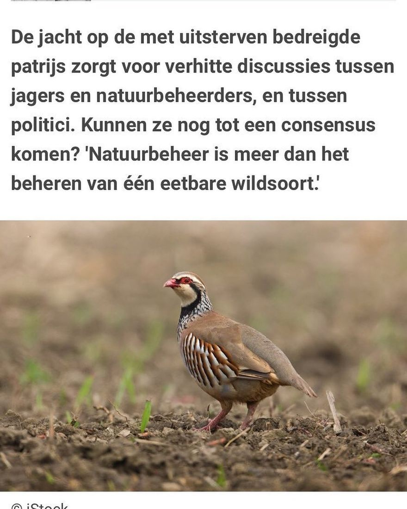

Rode patrijs, geen patrijs
1 december 2020 · Knack
- Op de foto
- Rode patrijs
- Het ging over
- Patrijs

Een artikel over de achteruitgang van de Patrijs in @knack_magazine. Een belangrijk punt natuurlijk, toch jammer van de foto van een Rode patrijs. Hopen dat die niet uitsterft in België!
Ingezonden door @bas_the_biologist